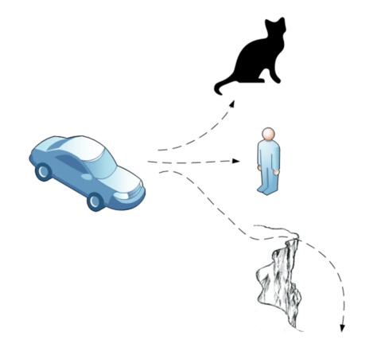
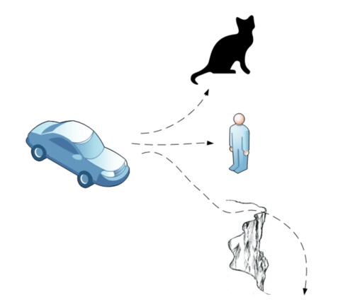
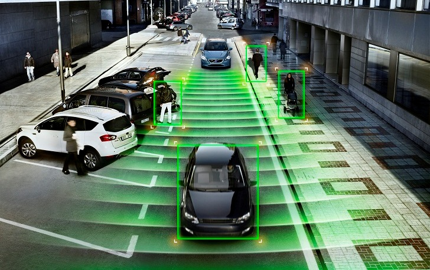
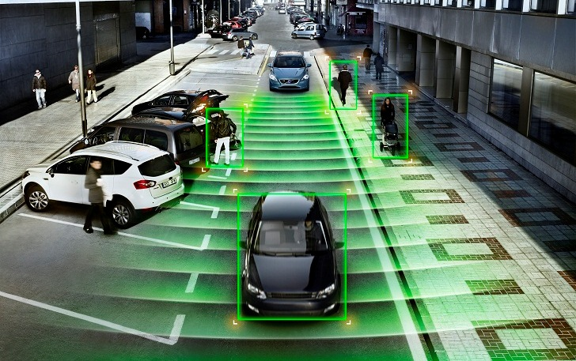

Transport
Driverless cars are simply put, cars without drivers. They use a variety of tools to achieve this from GPS positioning to on-board cameras in order to be able to see the road in front of them and make decisions based off this data. There are multiple companies which are currently vying to be the first people to get driverless cars released fully to the public and each of them have a slightly different approach to their release, if not the technology itself.
The largest hurdles that driverless cars will face are the ethical and legal issues surrounding it. This is a whole new technology and no precedents have really been set before concerning these issues. Three of those issues are described below.
Critical Events


Autonomy


Security